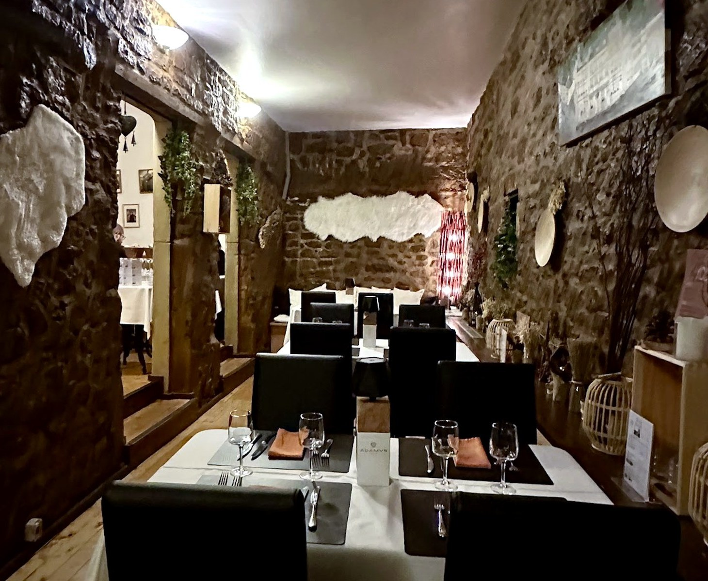
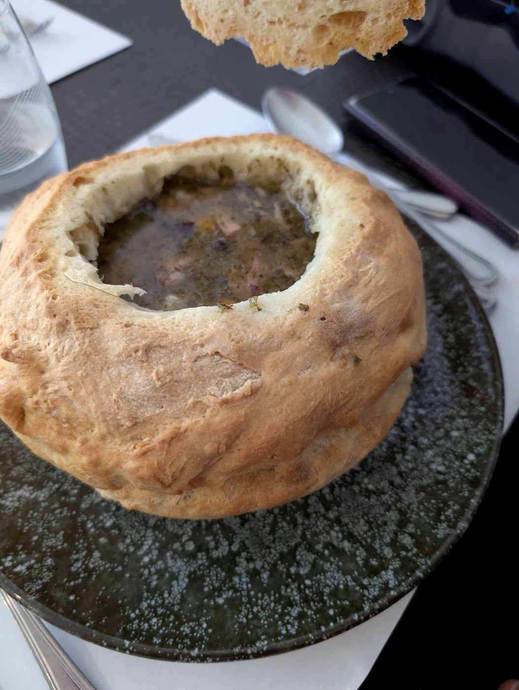
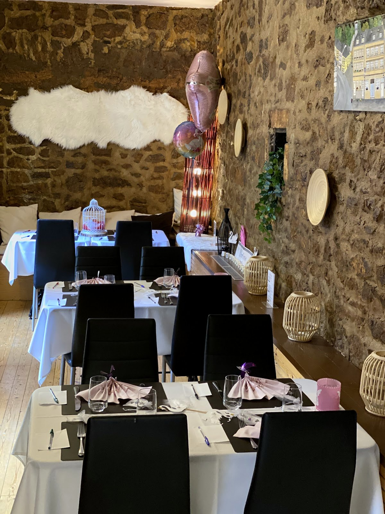
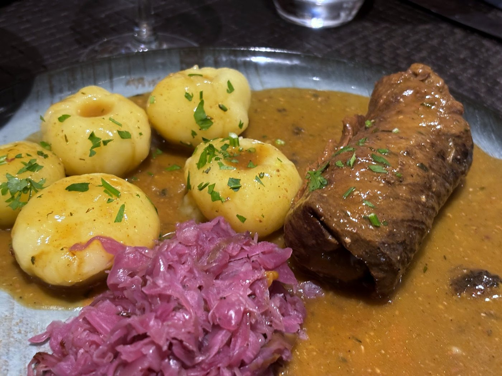
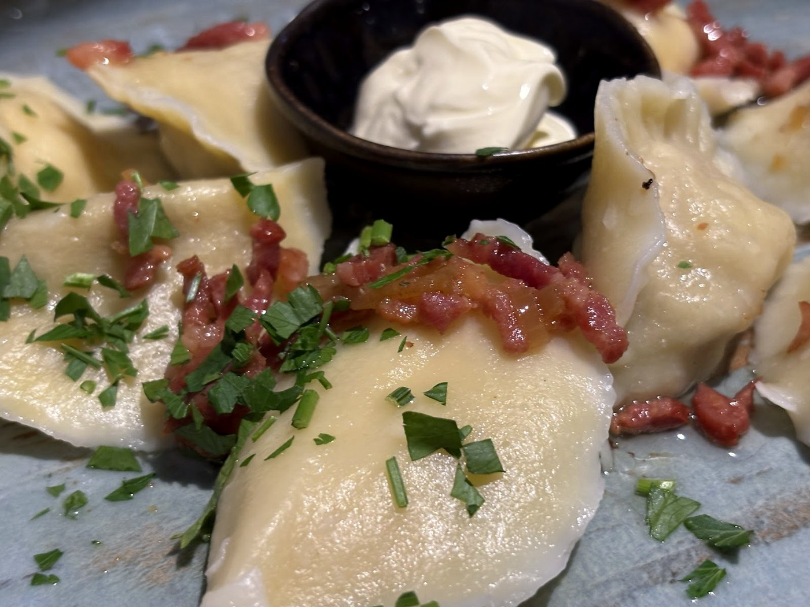
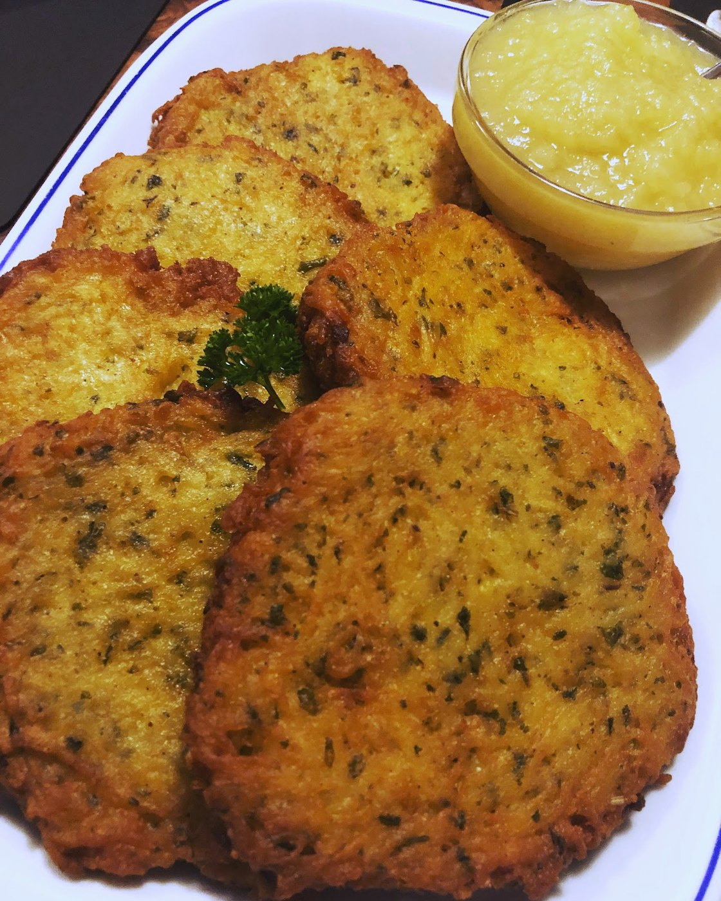
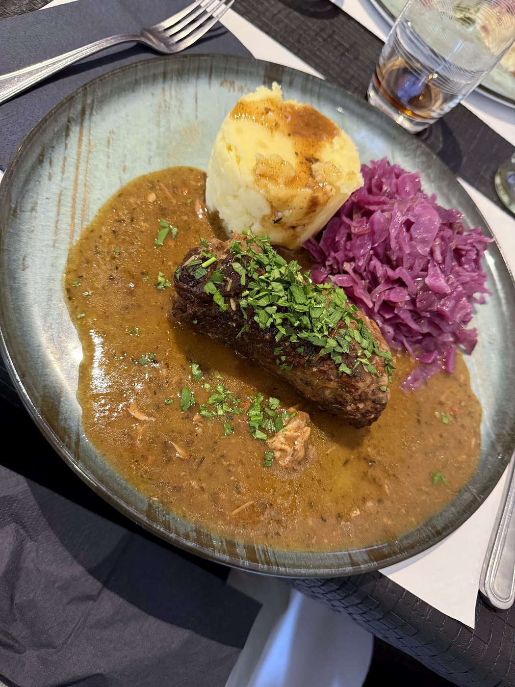
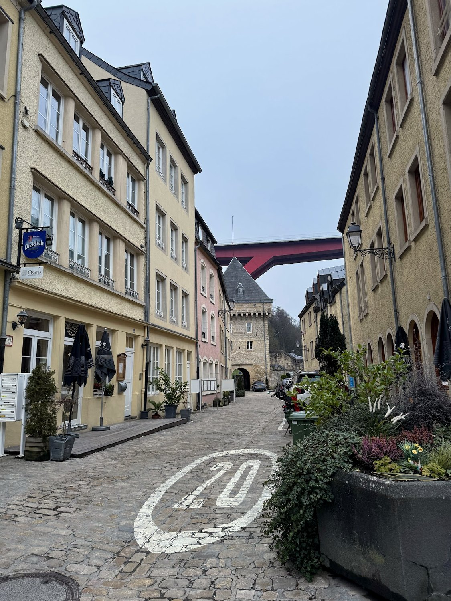
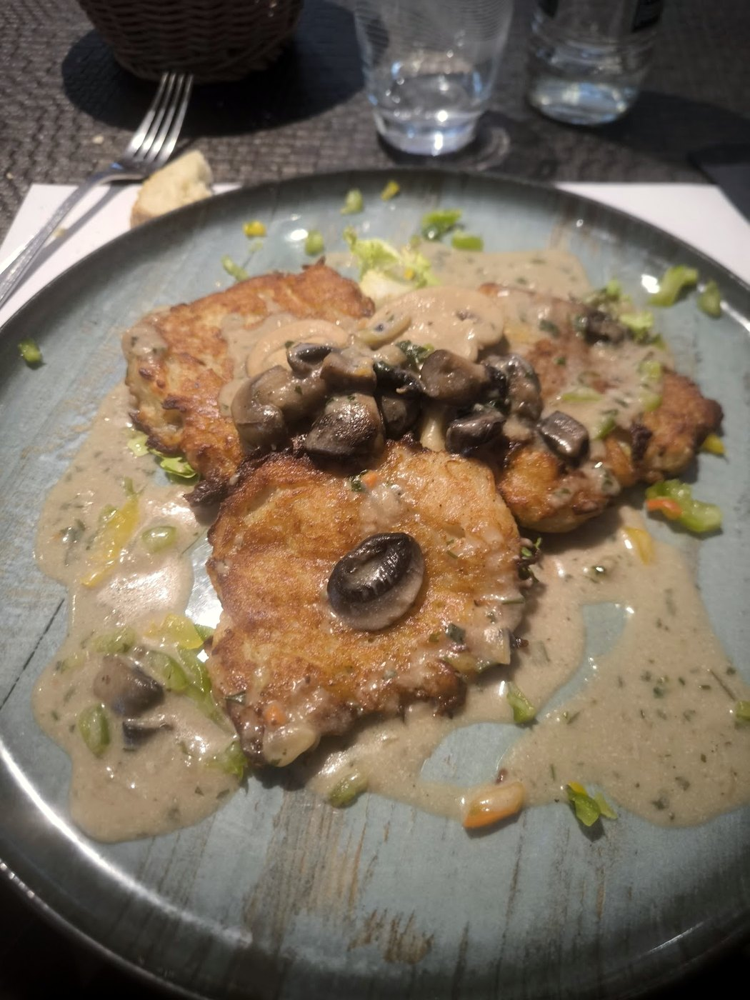
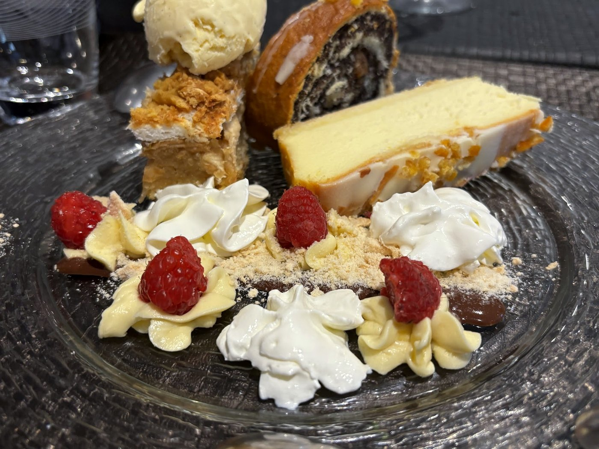

Un coin de Pologne, au fond de la vallée.
Pierogi, żurek en bol à pain, rolada de bœuf — la cuisine polonaise comme à la maison, rue Laurent Menager.

La soupe de seigle, servie dans un pain.
Un potage aigre à la farine de seigle fermentée, saucisse polonaise, ail et arômes typiques — versé dans une miche de pain évidée qui se mange à la fin. Chaud, réconfortant, généreux : le plat qu'on cherche quand il fait gris dehors.

Osada — « le hameau », « la maisonnée » en polonais — a posé ses tables au Pfaffenthal, dans la vallée sous la Ville-Haute. On y sert la vraie cuisine polonaise : pierogi pliés à la main, bigos qui mijote, galettes de pomme de terre dorées, choux farcis. Rien de compliqué, tout fait maison.
Une brasserie de quartier, chaleureuse et sans chichis, à deux pas de l'ascenseur du Pfaffenthal — un petit bout de Pologne au creux de Luxembourg.
Fromage & pomme de terre, viande, ou chou & cèpes — pliés maison.
Bigos, rolada de bœuf, żeberka à la bière — les plats qui prennent leur temps.
Sernik, makowiec au pavot, szarlotka aux pommes.





Relevée sur la carte de la maison — les prix et la disponibilité restent à confirmer.


Service midi & soir (pause l'après-midi). Horaires indicatifs — à confirmer avec la maison.